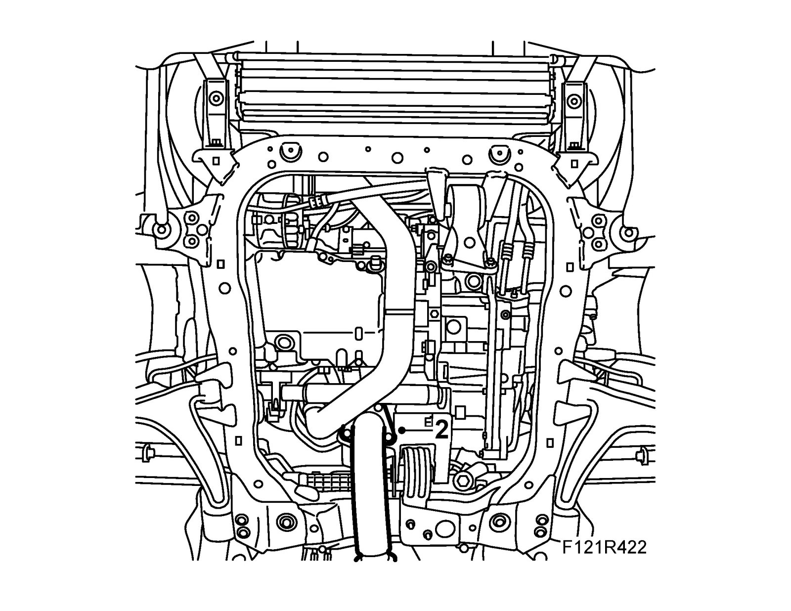
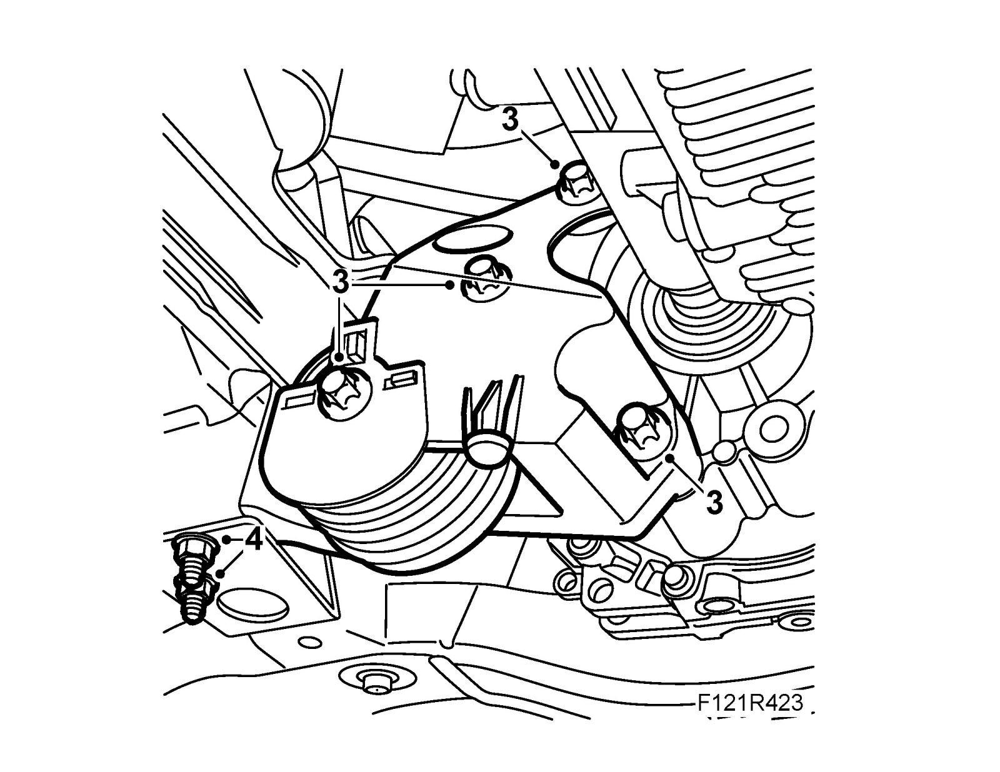

Rear Torque Arm
Rear torque armTo remove
1. Raise the car.
Important
The flexible bellow on the front section of the exhaust system must not be bent more than 5° from its neutral line. This means that if the front exhaust system is left hanging freely, it must not be bent more than by its own weight.
If the strain on the pipe is too great, its component parts will be permanently deformed. This can cause noise, leaks and eventually complete breakdown.
2. Remove the nuts from the front exhaust pipe on the catalytic converter. Take the strain off the front section with 83 95 212 Strap.

3. Remove the rear torque arm bracket.

4. Remove the rear torque arm.
To fit
1. Fit the rear torque arm.
Tightening torque 60 Nm (44 lbf ft)
2. Fit the rear torque arm bracket.
Tightening torque 80 Nm (59 lbf ft).
3. Fit the rear exhaust pipe. Remove the strap.
Tightening torque 25 Nm (18 lbf ft).
4. Lower the car.